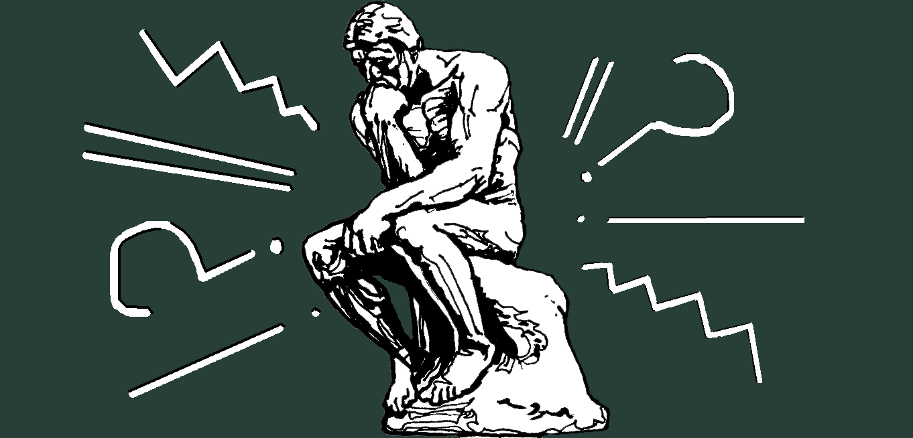

Самостоятельная подготовка к ОГЭ

Самостоятельная подготовка к ОГЭ
нажми на кнопку
1. сжатое изложения
2. тест
3. сочинение-рассуждение
Первая часть работы представляет собой сжатое изложение прослушанной аудиозаписи. Экзаменуемый должен передать содержание текста, отразив все важные для его понимания микротемы. При этом применить хотя бы один прием сжатия, соблюсти смысловую цельность, речевую связность, последовательность изложения.
Вторая часть состоит из 11 тестовых заданий по морфологии, орфографии, синтаксису, пунктуации, лексике, нормам грамматики русского языка.
Сочинение-рассуждение по одной из предложенных тем. Здесь предоставляется выбор, хотя все работы должны быть написаны с опорой на текст.
- длительность экзамена – 3 часа 55 минут.
- на изложение отводится 1 час. Аудиозапись включается 2 раза с интервалом 5 минут. Во время прослушивания можно записывать, фиксировать ключевые слова, фразы. Текст необходимо сократить до 70, максимум до 100 слов.
- на тест отводится 1 час, сочинение 1, оформление работы – 55 минут.
- разрешается пользоваться орфографическими словарями.
Максимальный балл за изложение – 6; за тестовую часть – 11; сочинение – 7; за грамотность – 9. При этом ошибки изложения и сочинения суммируются. Итого: 33 балла.
- критерии даны во второй части демоверсии-2024 ФИПИ. Объем – не менее 70 слов.
- на сколько вопросов ответит ученик правильно, столько баллов получит за тестовую часть. Правильное выполнение каждого пункта оценивается 1 баллом. Форма ответа указана в инструкции.
- критерии даны в демоверсии. Объем сочинения – не менее 70 слов. Рекомендуется не более 120. Грамотность оцениваются отдельно.
0 –14 баллов – «2»
15 – 22 балла – «3»
23 – 28 – «4» (за грамотность менее 4 баллов)
29 – 33 – «5» (не менее 6 баллов за грамотность)
Чтобы сдать ОГЭ по русскому на 3, надо пройти порог – 15 баллов, для чего необходимо выполнить все части.
- Эпитет, метафора, олицетворение, сравнение, гипербола, фразеологический оборот
- Правописание приставок. Неизменяемые приставки, на з-, с-, правописание пре-, при-
- Суффиксы существительных, прилагательных, наречий
- “-н-” и “-нн-” прилагательных, причастий, наречий, отглагольных прилагательных
- Личные окончания глаголов I и II спряжения, суффиксов причастий настоящего времени
- Лексика и фразеология. Синонимы
- Словосочетание, замена одного типа связи другим
- Грамматическая основа предложения
- Формы выражения подлежащего
- Виды сказуемого
- Однородные члены
- Обособленные определения, приложения, обстоятельства, уточняющие члены
- Обращения
- Вводные слова и предложения
- Синтаксический анализ сложного предложения
- Сложносочинённые, сложноподчинённые предложения
- Сложные предложения с разными видами связи
Ребята часто затрудняются выделить главную мысль изложения, неправильно выделяют абзацы, нарушают логику высказывания.
- Найдите и сгруппируйте тексты из открытого банка заданий ФИПИ по темам. Подумайте, какие примеры приводят авторы, чтобы раскрыть тему, над какими вопросами размышляют.
- Внимательно слушайте диктора. Паузы между абзацами всегда дольше. Каждый абзац – новая мысль.
- Тренируйтесь в сжатии текстов.
- Чтобы быстро записывать информацию, придумайте систему сокращений для самых распространенных слов.
- Пишите сочинения, заучивайте определения. За год можно хорошо подготовиться и сдать экзамен на отлично.
нажми на кнопку
- Из руководства для написания сочинения убрали формулировку «аргумент». Так ребятам облегчили понимание задания.
- В правилах оценивания появилось понятие «Логичность речи». К нему относятся: связность речи, последовательность изложения мысли, цельность текста, донесение мысли. Ваше сочинение должно отвечать этим критериям.
- При оценке грамотности теперь будут ставить 3 бала за правильный ответ, 2 балла — если допущено 1−2 ошибки, 1 балл — 3−4 ошибки, 5 ошибок — 0 баллов.
- Напомним, что для ученика важно правильно понять смысл задания и грамотно его выполнить. Скачайте демо-версию ОГЭ по русскому языку, чтобы увидеть варианты заданий.
- На демо-версиях научитесь грамотно заполнять экзаменационные бланки.
- На ОГЭ не волнуйтесь и внимательно читайте условия задания.
- Улучшайте свой почерк: тренируйтесь в прописях, каждый день заполняя 1 лист.
- На экзамене ребятам дают прослушать аудиозапись. В это время можно делать пометки в черновике. Постарайтесь записать первое предложение. Весь текст условно разделен на три микротемы, которые нужно отразить в изложении. Обратите внимание, что диктор делает паузы между ними, будет несложно понять, где начинается новая микротема. Одна микротема — один абзац изложения. В каждом абзаце должна быть отражена главная мысль темы. Ничего не добавляйте от себя, за это снижают балл. Внимательно прочитайте свой черновик, проверьте логичность изложения темы. Посчитайте количество слов, их должно быть не менее 70. Перепишите изложение в бланк ответа.
- Она состоит из одиннадцати заданий под номерами 2−12. Для того чтобы справиться с этим заданием, нужна хорошая подготовка по грамматике, морфологии и орфографии. Для успешного решения упражнений внимательно читайте каждый текст.
Если на ОГЭ забыли, как пишется слово, не переживайте: разрешено пользоваться орфографическим словарем. Однако личный словарь приносить нельзя, его должны выдать на месте проведения экзамена.
- 2.Выбрать в ответ номера утверждений, в которых верно указаны грамматические основы
- 3.Выбрать в ответ номера утверждений, где дана правильная характеристика текста
- 4.Установить соответствие между пунктационными правилами и предложениями
- 5.Расставить знаки препинания
- 6.Указать вариант где дано верное объяснение написанного слова
- 7.Вставуить пропущенные буквы
- 8.Раскрыть скобки и написать слово в соответствующей форме
- 9.Построить предложение на основе: управления, примыкания, согласования
- 10.Выбрать соответствующее содержанию текста высказывание
- 11.Определить средство выразительности речи
- 12.Найти в указанных предложениях слово с определенным значением
- Ученику предлагают написать три варианта сочинения на выбор:
13.1, 13.2 или 13.3. Номер 13.1 — самый сложный. Этот вариант — для ребят, которые хорошо владеют базой русского языка, отлично знают все понятия и термины.
Вариант 13.2 имеет сложную структуру, по мнению учеников. Здесь важно удачно подобрать примеры из текста, правильно научиться комментировать цитаты или фразы. Потренируйтесь писать сочинения такого типа.
Многие ученики на ОГЭ выбирают сочинение 13.3. Этот вариант — более понятный, у него проще структура. Поэтому с ним справится любой школьник.
- Напишите план. Сочинение должно состоять из трех частей: 1. тезис — главная мысль; 2 аргументы (подтверждают вашу мысль); 3. выводы.
- Читая текст, подчеркните важные предложения, в которых отражена главная идея повествования.
- Выберите отрывки текста, которые можно взять в качестве аргумента. Постройте на них свои рассуждения. Используйте краткое цитирование, но не делайте пересказ всего материала.
Как подготовиться к сочинению, если тема заранее неизвестна? Постарайтесь каждый день писать небольшое сочинение о прожитом дне. Составьте план и развивайте свои мысли, для этого достаточно около 150 слов. Учитесь кратко передавать свои мысли на бумаге.
- Занимайтесь спортом или фитнесом, делайте зарядку, можно петь и танцевать, гулять, ходить в бассейн.
- Психологи советуют применять методы релаксации: слушать спокойную музыку, наблюдать за облаками или смотреть на звезды и мечтать.
- Попробуйте технику самовнушения. Повторяйте положительные утверждения, например: «Я могу сдать экзамен на отлично», «Я справлюсь с задачей», «Всё будет нормально», «Я умница, я всё сдам!»
- Во время стресса происходит обезвоживание организма. Перед экзаменом, на экзамене выпейте несколько глотков минеральной воды.
- Нужно больше практиковаться, проходить пробные экзамены в школе. Это помогает привыкнуть к формату ОГЭ и к обстановке экзамена.
- Хорошо изучить все разделы школьной программы
- Научиться правильно понимать задания ОГЭ
- Грамотно заполнять бланки заданий на экзамене
- Изложение — 60 минут.
- Работа с текстом — 70 минут.
- Сочинение — 70 минут.
Это время дано без учета переписывания в чистовик. Всего экзамен длится 3 часа 55 минут.
- З. Е. Александрова. Словарь синонимов русского языка. Практический справочник поможет обогатить словарный запас.
- С. И. Ожегов, Н. Ю. Шведова. Толковый словарь русского языка — должен стать настольной книгой каждого ученика.
- ГД. Э. Розенталь. Универсальный справочник по русскому языку. Поможет выучить правила орфографии, пунктуации, стилистики.
- И. П. Цыбулько. «ОГЭ-2025. Типовые экзаменационные варианты». Решайте эти задания после прочтения теории.
- Н. А. Сенина. «ОГЭ-2025. 30 тренировочных вариантов». Теория + практика.
- И. П. Васильевых, Ю. Н. Гостева. «Русский язык. ОГЭ-2025». В книге рассмотрено 37 типовых вариантов экзаменационных заданий.
- Потренируйтесь выполнять задания онлайн, тут вы сразу увидите, правильно ответили или нет.